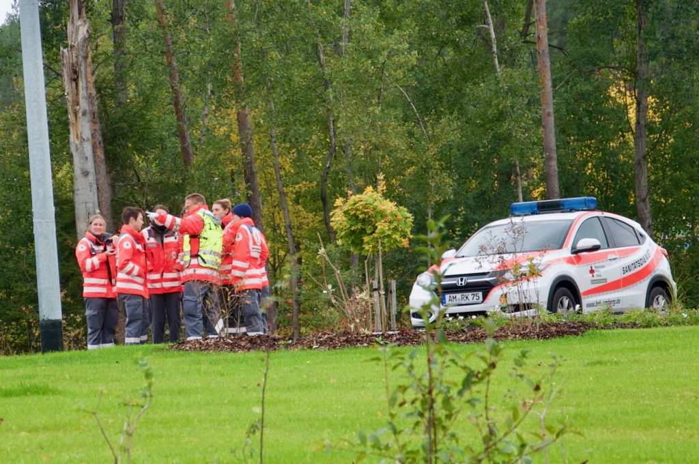

Katastrophenschutzgesetz
Das Katastrophenschutzgesetz Bayern liefert die gesetzliche Grundlage auf der die SEG'en aufgebaut sind.
Darin ist unter anderem festgehalten, wer zu einer Katastrophenhilfe verpflichtet ist:
Zitat:
Art. 7 Katastrophenhilfe
- Katastrophenhilfe ist die auf Ersuchen der Katastrophenschutzbehörden zu leistende Mitwirkung im Katastrophenschutz. 2Sie muß geleistet werden, wenn nicht durch die Hilfeleistung die Erfüllung dringender eigener Aufgaben ernstlich gefährdet wird.
- Bei der Vorbereitung der Katastrophenabwehr erstreckt sich die Pflicht zur Katastrophenhilfe darauf,
- die Katastrophenschutzbehörden bei der Erstellung und Fortschreibung von allgemeinen Katastrophenschutzplänen und von Alarm- und Einsatzplänen zu unterstützen,
- auf Anforderung geeignete Personen für die Mitwirkung in der Katastropheneinsatzleitung zu benennen sowie
- an Katastrophenschutzübungen mitzuwirken.

- die Katastrophenschutzbehörden bei der Erstellung und Fortschreibung von allgemeinen Katastrophenschutzplänen und von Alarm- und Einsatzplänen zu unterstützen,
- auf Anforderung geeignete Personen für die Mitwirkung in der Katastropheneinsatzleitung zu benennen sowie
- an Katastrophenschutzübungen mitzuwirken.
2 Soweit die in Abs. 3 genannten Behörden, Dienststellen und Organisationen im Vorfeld eines außergewöhnlichen Großereignisses mit hoher Gefahrgeneigtheit und besonderem Schutz- und Koordinierungsbedarf
an weitergehenden Vorbereitungsmaßnahmen mitwirken, kann ihnen die Katastrophenschutzbehörde die erforderlichen Weisungen erteilen; werden vorsorglich Einsatzkräfte vorgehalten, soll sie zu deren Koordinierung einen Örtlichen Einsatzleiter entsprechend Art. 6 Abs. 1 bestellen.
3 Die Aufgaben und Befugnisse der Polizei bleiben unberührt.
Zur Katastrophenhilfe sind verpflichtet
- die Behörden und Dienststellen des Freistaates Bayern,
- die Gemeinden, die Landkreise und die Bezirke,
- die sonstigen der Aufsicht des Freistaates Bayern unterstehenden Körperschaften, Anstalten und Stiftungen des öffentlichen Rechts,
- die Feuerwehren,
- die freiwilligen Hilfsorganisationen im Sinn des Art. 2 Abs. 13 des Bayerischen Rettungsdienstgesetzes (BayRDG),
- die Verbände der Freien Wohlfahrtspflege,
auch wenn sie ihren Sitz oder Standort nicht im Zuständigkeitsgebiet der Katastrophenschutzbehörde haben.
